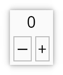

Counter part 2: event handling with messages

In part 1 we built a custom Counter widget with derive(Widget). In this
part we talk about messages and finally make the button work.
Events and messages
When the user clicks on our button, the windowing system sends an event to our
app. KAS's event manager uses the Layout trait to determine which widget is
under the mouse, then forwards the event to that widget with
event::SendEvent, eventually reaching the target widget's event::Handler
implementation.
The TextButton widget accepts a closure, which we
already used to print a message and then to open
a message box. Usually, however, controls like TextButton will generate a
message which is returned (through event::SendEvent) until a parent or
ancestor handles the message.
The event::Handler trait has an associated type: Msg. This is the widget's
message type. A child widget's message type must either be convertible to
the parent's message type (with Into), or must be handled explicitly.
When we used derive(Widget) on our Counter struct, the "default" message
type, VoidMsg, was assumed. (We could have made this explicit with the
attribute #[handler(msg = VoidMsg)].) VoidMsg is a void type (an empty
enum: enum VoidMsg {}), thus Option<VoidMsg> is statically-known to be
Option::None (because there are no valid VoidMsg variants). This is the
"default" message type, used whenever a widget does not have anything to
return, although sometimes it must be specified explicitly.
Note: although clearly it is easy to implement From<VoidMsg> for any type T,
until Rust's rules around coherence/specialisation are made more flexible we
cannot write a generic implementation. Thus for now we must implement
From<VoidMsg> for any specific type where this is required. The
derive(VoidMsg) macro is a convenient way to do this.
Back to TextButton and our counter
To implement our event handling, we'll have our TextButton produce a
message. Since the message doesn't need to include an identifier or any data,
we'll just use () as the message type:
#![allow(unused)] fn main() { button: TextButton::new_msg("&count", ()), }
Note that our Counter has message type VoidMsg and () is not
convertible to VoidMsg, thus if we use TextButton<()> in Counter
without a handler we'll get a compile error.
To write our handler, we just use an ordinary method and declare it within the
#[widget] attribute:
#![allow(unused)] fn main() { #[widget(handler = increment)] button: TextButton<()>, }
and:
#![allow(unused)] fn main() { impl Counter { fn increment(&mut self, mgr: &mut Manager, _: ()) -> Response<VoidMsg> { self.counter += 1; *mgr |= self.display.set_string(self.counter.to_string()); Response::None } } }
The prototype for this message is fixed:
#![allow(unused)] fn main() { fn handler(&mut self, mgr: &mut Manager, msg: M) -> Response<N> }
where M and N are the child's and parent's message types respectively.
We've already seen event::Manager; Response is just an extended
version of Option.
Note: it was no accident that Counter has message type VoidMsg. It is
actually required that the top widget, used in our Window, has this message
type since the window has no message handler.
Aside: TkAction
If you're wondering what *mgr |= ... is for above, let me explain. When we
update self.display with HasString::set_string, the widget doesn't have a
way to directly tell the toolkit: "my value has changed and I need to be
redrawn". Instead, it returns TkAction.
The app developer is expected to call mgr.send_action(action) or use the
syntactic-sugar *mgr |= action. If not, the redraw might not happen (or it
might anyway, say because the button also decided that it wants to be redrawn).
Since TkAction is annotated with #[must_use], it is hard to forget this
extra step, though sometimes you'll see a TkAction being explicitly ignored
with let _ = ...;. Doing things this way instead of passing mgr into
set_string is more flexible: it possible to call the method before the UI is
started (at which point no event::Manager is available).
Conclusion
The full code for our example can be found here. Run it with:
cargo run --example counter
As promised, we covered:
- basic layout, using
derive(Widget)with the#[layout]attribute - event handling using messages and handlers
Next up, we'll use the same basic tools for a more complex app (a calculator), with a couple of additions:
- the
gridlayout - putting actual data in our messages
- the
make_widget!macro